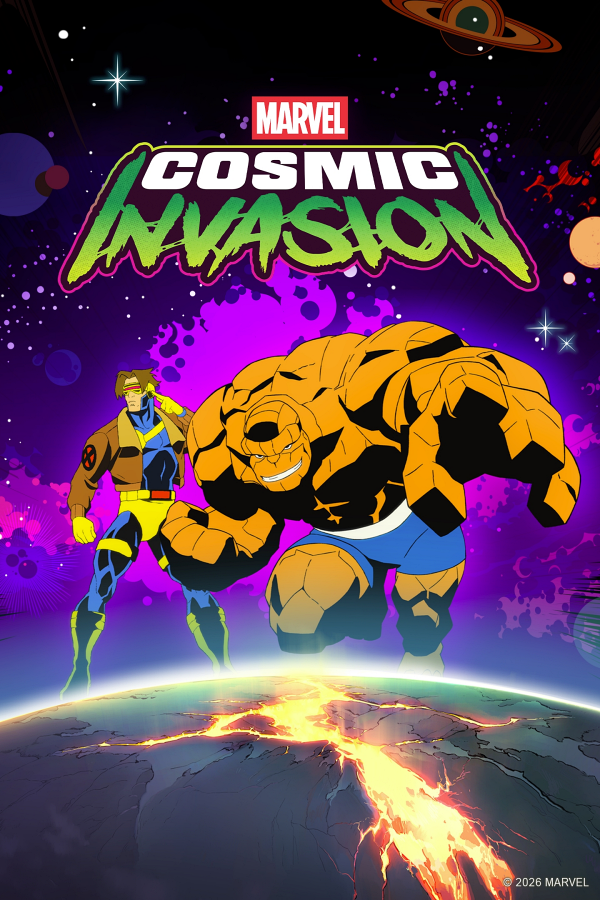

Game profile

Marvel Cosmic Invasion
Every archived year-end list appearance, including placement and points earned.
About the Game
Marvel Cosmic Invasion is an action game developed by Tribute Games. It released in Dec 1, 2025. Most rawgers rated the game as "Meh". Marvel Cosmic Invasion is available on Linux, Nintendo Switch, Xbox Series S/X and PC. Fred Gemus directed the game. Tee Lopes scored the game.
| Released | 2025-12-01 |
|---|---|
| Developer | Tribute Games |
| Genres | Action |
| Platforms | Linux, Nintendo Switch, Xbox Series S/X, PC, PlayStation 4, PlayStation 5 |
Game information provided by RAWG.
2List appearances
1Years represented
Points by Year
82025 points
List History
| Year | Source | List | Placement | Points |
|---|---|---|---|---|
| 2025 | GQ | The 20 Best Video Games of 2025 | 17 | 3 |
| 2025 | WayTooManyGames | Top 20 Best Games of 2025 | 7 | 5 |